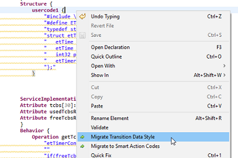

Noteworthy release changes are described here.
Breaking Changes: This release contains a breaking change to models used with previous versions.
The name of the data for protocol messages is not longer used and is marked as deprecated. In state machines the message data is now named transitionData. Thus all occurrences of the message data have to be renamed. The changes to the model are depicted in the picture below:
eTrice provides a migration action which automatically applies the modification to a complete model file. But it is not guaranteed to find all instances of the message data, thus it may be necessary to apply the changes manually. The migration can be triggered via editor right click and hitting Migration Transition Data Style action.

Note: The migration assistant relies on the message data names, thus the names should not be removed until you have fully migrated your project and all dependent projects.
In addition eTrice now uses the so-called Smart Strings for user code. This is not a breaking change, but it is recommended to migrate to this new syntax also. Using the Transition Data migration action will automatically convert all affected user codes into Smart Strings. Further there is a dedicated migration action for the Smart Strings, see Migrate to Smart Action Codes above. Additionally there is a quickfix available: